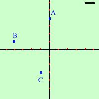
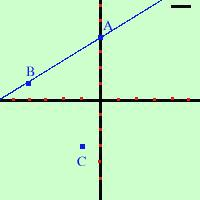
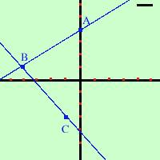
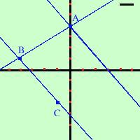
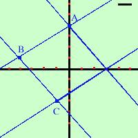
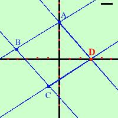

| Dovro' costruire geometricamente un parallelogramma conoscendone
tre vertici consecutivi |
| Metodo geometrico |
Procedimento algebrico |
Traccio i tre punti
 |
Considero i tre punti:
A=(0,4)
B=(-4,1)
C=(-1,-3) |
Collego il punto A col punto B
 |
Equazione della retta passante per i due punti A e B
y - y1
x - x1
------- = ---------
y2 - y1
x2 - x1
|
Collego il punto B col punto C
 |
Equazione della retta passante per i due punti B e C
y - y1
x - x1
------- = ---------
y2 - y1
x2 - x1
|
Dal punto A traccio la parallela alla retta BC
 |
Equazione della retta parallela alla retta BC passante per
il punto A
y - y1
= m1(x - x1)
|
Dal punto C traccio la parallela alla retta AB
 |
Equazione della retta parallela alla retta AB passante per
il punto C
y - y1
= m1(x - x1)
|
Individuo il punto d'incontro D all'incrocio delle parallele
 |
Sistema fra le rette parallele trovate: ho come soluzione le
coordinate del punto D
|